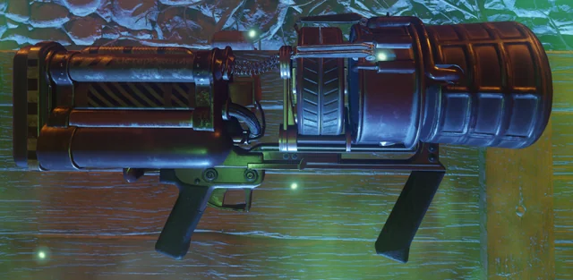
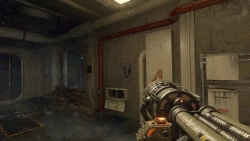
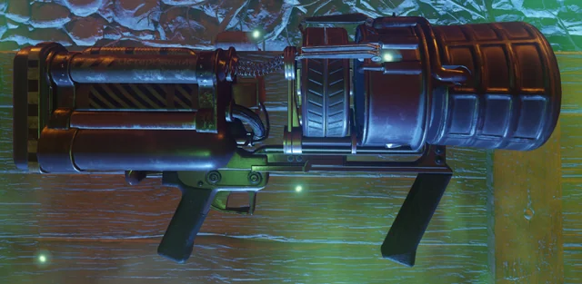
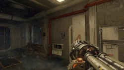
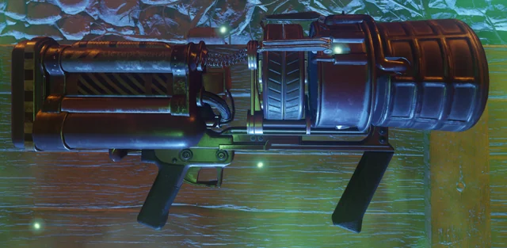
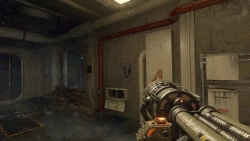
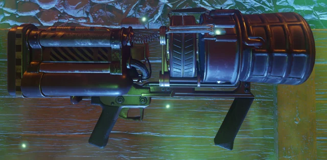
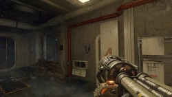

THUNDERGUN
DEMOSTRACION DE HABILIDADES
 







En esta ocasion se nos presenta el arma THUNDERGUN!!!! El Thundergun es un arma grande con forma de cañón que dispara ráfagas de aire comprimido increíblemente fuertes capaces de eliminar ordas de zombies en el momento que se activa, su primer debut fue en el mapa KINO DER TOTEN (COD BO1), originalmente el arma iba a aparecer en el primer call of duty con el modo zombies (WAW), pero no fue posible por la cancelacion del DLC.
El arma al ser mejorada en el PACK-A-PUNCK se convierte en el todopoderoso CA;ON DE ZEUS, otro dato interesante es que el arma no hace aparicion en la entrega de COD BLACK OPS 2, no seria hasta la entrega futura de BLACK OPS 3 en el mapa de revelations y luego tambien dentro del DLC ZOMBIES CHRONICLES
su creacion se remonta dentro del grupo ASCENCION, bajo el nombre de proyecto TRUENO y atribuida al DR. GERSH
- Cargador de 2 balas y 24 en reserva
- Funciona con aire comprimido
- Unicamente se dispara de cadera
- No puede ser recargada hasta que se vacie el cargador